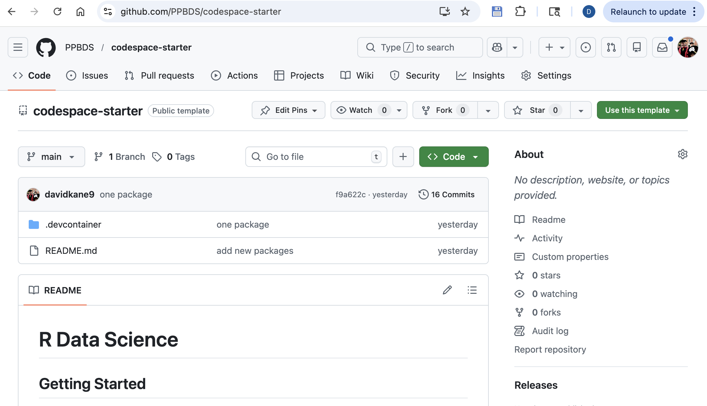
Getting Started
You can never look at the data too much. – Mark Engerman
The world confronts us. Make decisions we must.
We do all of our data science in the cloud, using GitHub Codespaces with Visual Studio Code (VS Code).
The quickest way to begin is a throwaway Codespace launched directly on PPBDS/codespace-starter, a public repository you do not own. The image is pre-built, so it starts in about a minute and needs no setup. Nothing you do in the Codespace persists once you delete it, but you can still complete tutorials and download your answers.
We call this approach Start mode. In this chapter you will use it to run both the “Getting Started” tutorial from the tutorial.helpers package.
GitHub
Sign up for a GitHub account by following the instructions on the GitHub homepage. Follow this advice when choosing your username.
Use your school email address for this account, if you are a student. The GitHub Student Developer Pack provides all sorts of perks, but you must visit that page to turn on the benefits. It confirms your student status on the basis of you having an email account at your school. Next, add a second email address for this account, a permanent one that is not tied to your current school or job. After all, your school email address will disappear someday but your GitHub account is for life.
On GitHub, your projects are organized into “repositories,” usually called “repos.”
GitHub gives every account 60 free Codespaces hours per month. Free hours are not infinite, however, so it is your responsibility to stop (and delete) Codespaces you are not using.
Start mode: a throwaway Codespace
In Start mode you work inside a codespace-starter Codespace that you do not own. It is the fastest way to get going and perfect for trying things out or running a tutorial, but nothing you do persists once you delete the Codespace. We use it here to learn the platform and run the “Getting Started” tutorial.
Go to https://github.com/PPBDS/codespace-starter.
This Codespace is for learning the platform, not for your permanent work.
Launching the Codespace
Click the green Code button at the top right of the repository page, switch to the Codespaces tab, and click “Create codespace on main.”
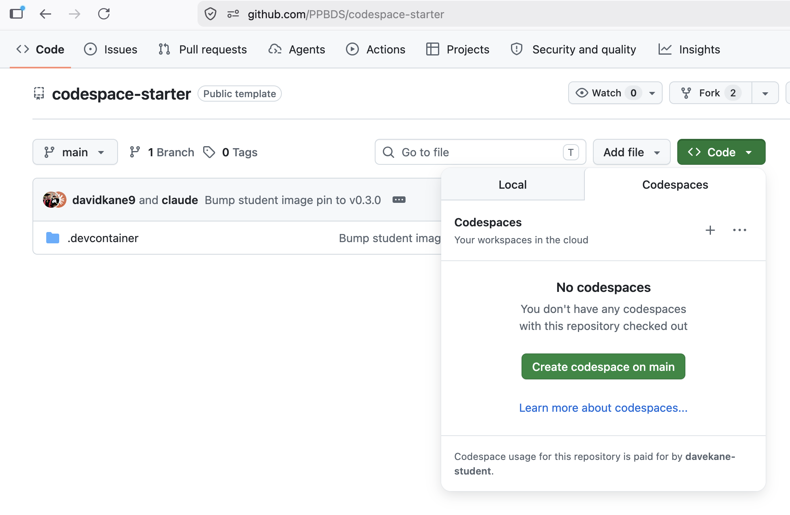
This will take a minute or so. Behind the scenes, GitHub is creating a virtual machine in the cloud with all the necessary tools for doing data science. That machine is called a “Codespace.”
You can tell that the Codespace is not ready by noticing the “Setting up remote connection: Building Codespace…” message in the lower right. GitHub is creating the Codespace following the instructions in the devcontainer.json file located in the .devcontainer directory.
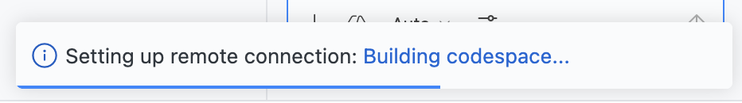
When that message disappears, the Codespace is built. You still need to connect to it, as indicated by the “Opening remote” message in the lower left.
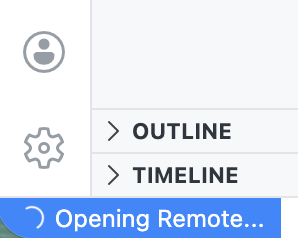
Once that disappears, you are connected, but the Codespace usually still has a few things to install. You can tell that it is not finished by looking in the upper left.
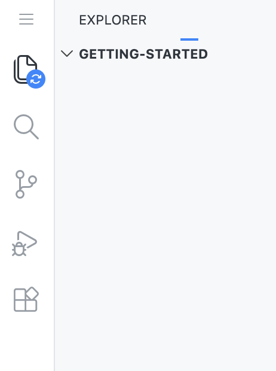
Note the blue dash moving above the repo name. That indicates the process is not complete. Only the five default “extensions” appear along the left edge. Our devcontainer.json file installs several more at the end. The last step in the process is the installation of the R packages we use for tutorials. You can see that occurring here:
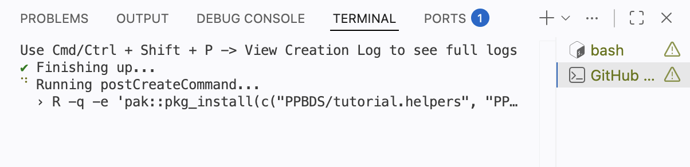
The Codespace should now be displaying its GitHub-assigned name. The process is complete once a message appears informing you so.

The blue dash has disappeared. Several more extensions have been installed. The GitHub name, fictional winner, now appears next to the repo name as well as in the quick access window above the editor. Your name will be different, as GitHub assigns a unique name to each Codespace.
Touring the workspace
VS Code is an integrated development environment (IDE) for coding and data science. Highlights:
This Codespace is in the cloud. The URL will be a combination of the GitHub-determined human-readable but somewhat nonsensical name —
fictional winnerin this case — and a bunch of letters and numbers. There is no need to remember this URL. GitHub keeps track of things. You can see all your current Codespaces athttps://github.com/codespaces.In the upper right-hand corner are the “Customize Layout …” buttons. These are part of the VS Code “Title Bar.” Since we aren’t using the AI tools right now, it often makes sense to close the “Chat” window, which appears on the right side of the screen. You can close this in two ways: Click the “X” mark or click the “Toggle Secondary Side Bar” button, the furthest right-hand button. You can then bring the Chat window back by clicking the “Toggle Secondary Side Bar” button again. Try it now.
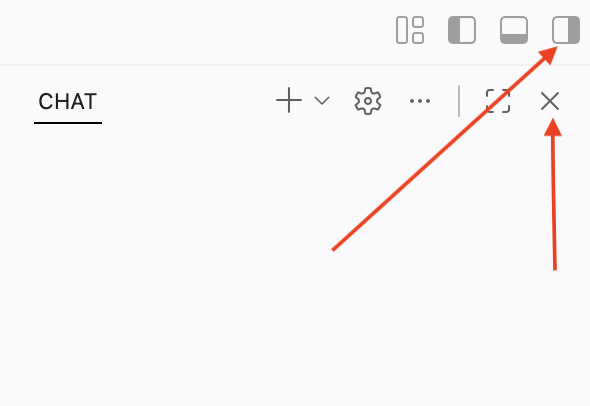
- The “Activity Bar” is the narrow vertical strip on the far left with icons for Explorer, Search, Source Control, Extensions, etc. By default, the “Explorer” button is selected, showing that the only thing in the project is a folder called
.devcontainer. Click on that folder to show its contents.
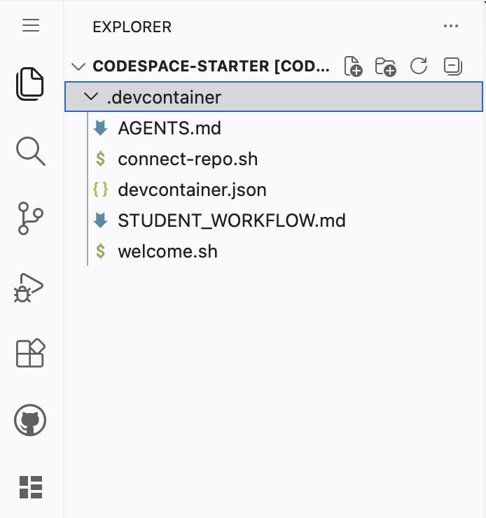
Click on the devcontainer.json file. Doing so opens that file in the Editor window. Your screen should now look like this:

The “Editor” is the large central area where you edit files.
The “Panel” is the horizontal area below the Editor, containing the Problems, Output, Debug Console, Terminal, and Ports tabs. Our main focus is the Terminal tab. This is where we “talk” to both the (cloud) computer itself and to the R program that it provides.
The Terminal currently shows a “bash” shell. We will learn more about shells later. Click on the
+sign to the right of the “Ports” tab. This will start a second bash shell. Your Panel should now look like this:

Note the two bash shells on the right side of the Panel. We can click on each to move back and forth between them.
In addition to shells, we can also start an R session under the Terminal. Instead of clicking the
+sign, click the small downward pointing arrow next to it. This will show a variety of options.
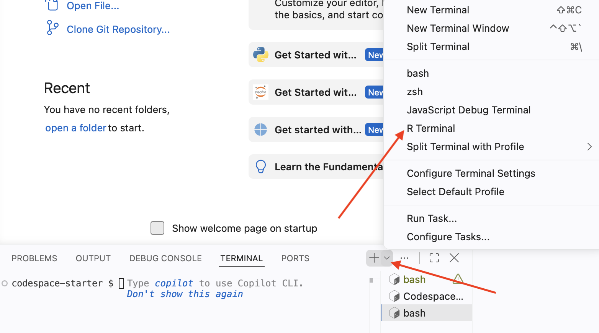
Select “R Terminal.” This will start an R session that lets you “talk” to R in the same way that a bash shell allows you to talk to the computer.
Click on the “R Interactive” option which should appear beneath the two bash lines on the right side of the Panel.
Type in
2 + 2at the R prompt and hitenter(Windows) orreturn(Mac). (Going forward we will just useEnterto refer to this action. Mac users should hitreturn.)Type in
plot(1:10)at the R prompt. HitEnter. Your screen should look like:
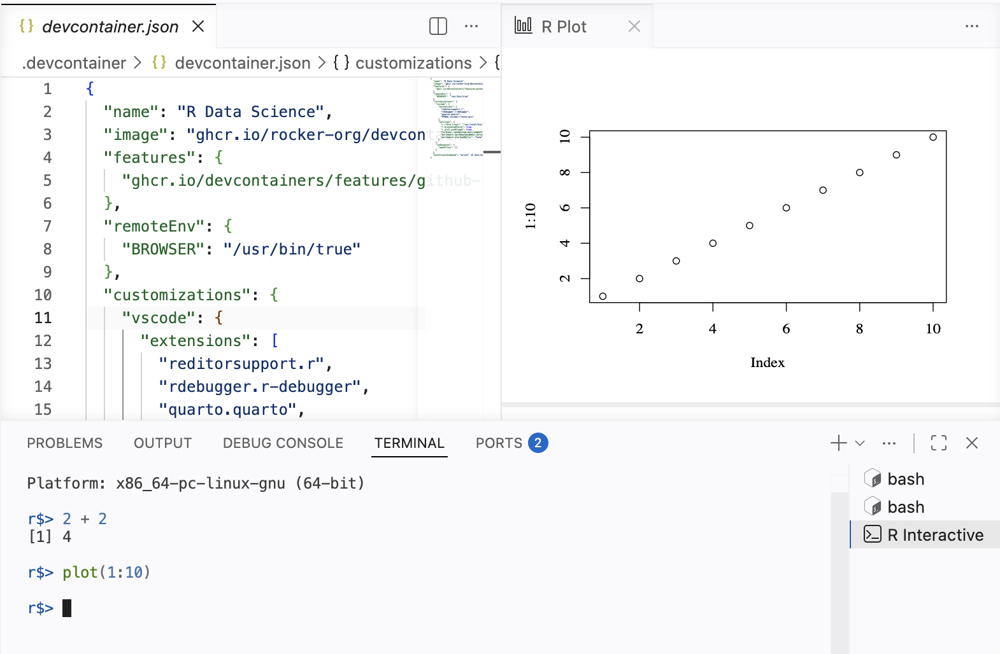
An IDE like VS Code is designed to organize all the different work we do as data scientists. We need to talk to the computer via the bash Terminal (often referred to as the “shell”), talk to R, view plots, and so on.
Running the Getting Started tutorial
If you hover your cursor over the Activity Bar on the far left-hand side, you can see the names of the different options. Near the bottom is one labeled “R Tutorials.” Click on it. This brings up all the R packages with tutorials. Click on the package name tutorial.helpers.
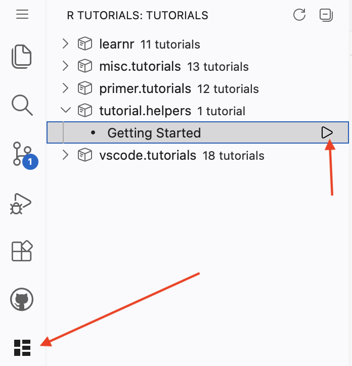
Doing so shows all the R tutorials which are in the tutorial.helpers package. If you hover your cursor over a tutorial, a rightward pointing arrow appears. Clicking that arrow starts the tutorial. Start the getting-started tutorial from the tutorial.helpers package. Do so now.
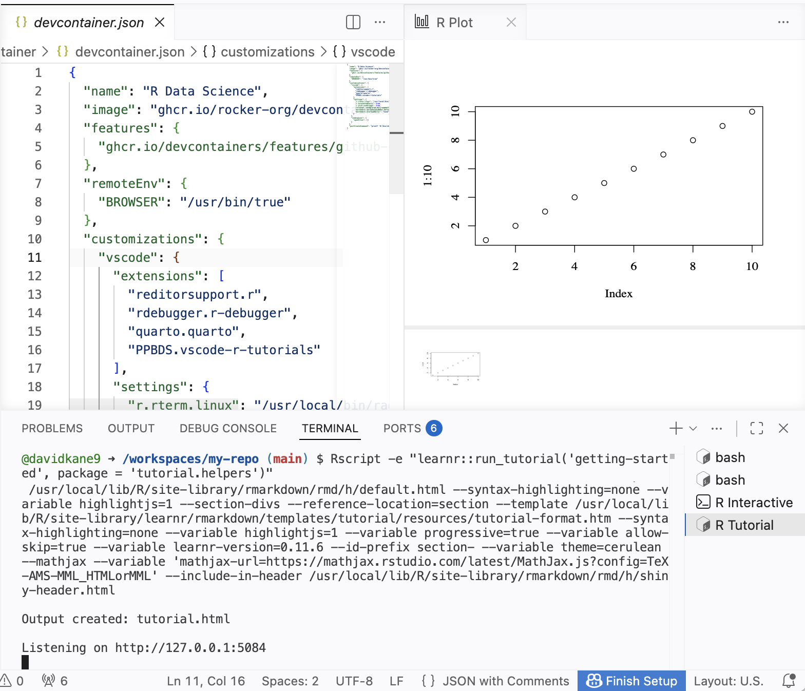
Clicking the tutorial arrow starts a new R session, labeled “R Tutorial” on the right side of the panel. We now have four different terminals: two bash and two R. In this case, a “terminal” is any connection to the (cloud) computer itself or to a program running on it, like R. In fact, the bash shell is just another program which runs in the computer.
The R Tutorial session shows the tutorial being built and its current state, which is “listening,” i.e., waiting for you to complete the tutorial. While the tutorial is running, this R session is unavailable for other work.
You should also have been given an option to open the tutorial in the browser. You should take that option. If it does not appear, or if you missed it, you can also open the tutorial by hand:
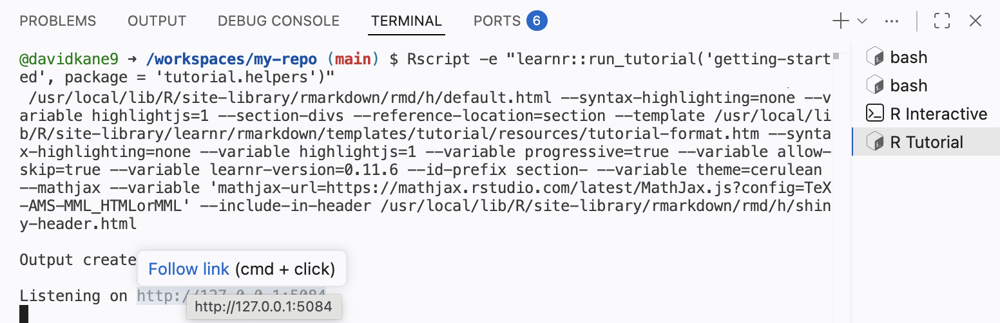
The http address refers to a file located in your GitHub Codespace but which is still visible on your local machine via the magic of “port forwarding,” meaning that the Codespace is allowing your browser to open it. Opening it in your browser shows:
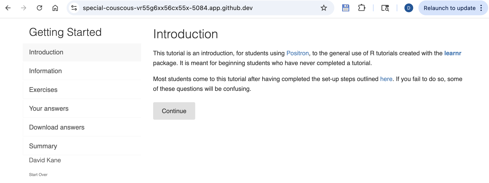
Read and follow the instructions. At the end of the tutorial, download your answers.
Stopping, restarting and deleting the Codespace
A Codespace is your responsibility in the same way that your laptop is your responsibility. While a Codespace is running it counts against your free hours, and an unused Codespace will be deleted by GitHub after 30 days.
There are three common ways to close a Codespace.
First, just leave it alone. GitHub will close it on its own after 30 minutes of inactivity, though we recommend changing that default to 15 minutes in your Codespaces settings.
Second, type Cmd + Shift + P (on Mac) or Ctrl + Shift + P (on Windows/Linux) to bring up the Command Palette. (Throughout this book, shortcuts are written like Cmd/Ctrl + Shift + P, meaning the command key on Mac or the control key on Windows/Linux.) The Command Palette provides access to all VS Code commands. Type stop into the search bar.
On some browsers, the keyboard shortcut does not work. You can always access the Command Palette by clicking the search bar at the top of the window and typing > followed by the command you would like to use.

Select “Codespaces: Stop Current Codespace.”
Third, you can go to your main Codespaces control panel at https://github.com/codespaces. You can also reach this page from any page on GitHub by clicking the menu icon in the upper left and selecting “Codespaces”:
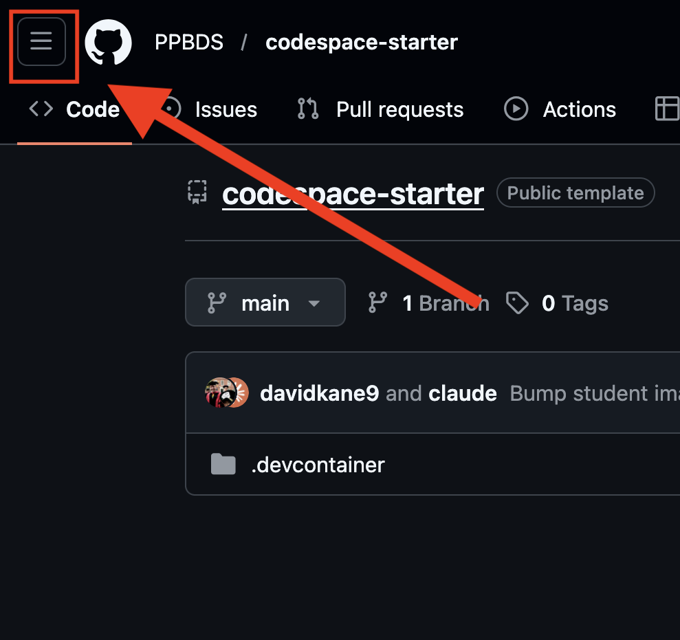
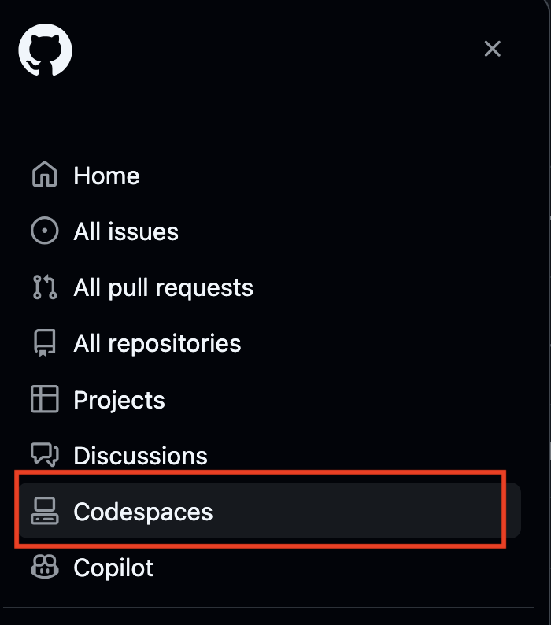
Either path brings you here:

This shows all your Codespaces, both active and inactive. The ... menu on each row provides several commands, including “Stop Codespace.”

Simply closing the browser window does not stop your Codespace from running. Always stop a Codespace explicitly to preserve your free hours.
Now stop this Codespace using whichever method you prefer.
Once it is stopped, you can restart it from your Codespaces page by clicking the ... menu next to this Codespace and then selecting Open in Browser.

Once you are done with a Codespace, you should delete it. To do so, go to your Codespaces page, click the ... menu next to this Codespace and select Delete.
This Codespace was a sandbox. You do not own PPBDS/codespace-starter, so there is nowhere for your work to go once you stop using the Codespace. That is fine — you have already downloaded your tutorial answers, which is the only thing here worth keeping.
Using your own machine
You can do all of this work on your own laptop, if you prefer. But, in that case, you are responsible for setting everything up. That means installing VS Code, Git and R. You will almost certainly want to install the same VS Code extensions which we use, including:
"reditorsupport.r",
"quarto.quarto",
"PPBDS.vscode-r-tutorials",
"ritwickdey.LiveServer",
"tomoki1207.pdf",
"mechatroner.rainbow-csv"xThis listing is from the .devcontainer/devcontainer.json file from PPBDS/codespace-starter. You may also find it useful to use the same VS settings which are defined there.
You will also need to install, by hand, various R packages. From the R Terminal, you would run commands like:
install.packages("pak") You may be asked to select a CRAN mirror. It does not matter which you choose.
pak::pak("tidyverse")
pak::pak("PPBDS/vscode.tutorials") These steps are not enough to perfectly replicate what we show in the Codespace. See PPBDS/devcontainers for more details.
But this should be enough to get you started, should you decide to go this route. If you have trouble, ask AI, pointing it toward this chapter and to the PPBDS/codespace-starter and PPBDS/devcontainers repos.
Summary
You should have done the following:
- Signed up for a GitHub account.
- Used Start mode — a throwaway Codespace on
PPBDS/codespace-starter— to complete the Getting Started and Introduction to R tutorials from tutorial.helpers, downloaded your answers, then deleted the Codespace.
For doing some tutorials, you can just use Start mode and download your answers — no repository needed. When a later tutorial asks you to keep your work and build on it, the next chapter, Git and GitHub, shows you how to create a repository you own.
Let’s get started!